In the theory of polynomial interpolation, an important issue is the distribution of the interpolation points. Points that cluster near the boundary, such as Chebyshev points, are usually much better than equispaced points.
Suppose we don't know any of the theory and just let an algorithm pick effective points on the fly. Specifically, suppose $f$ is a continuous function on $[-1,1]$. We could take the first interpolation point $x_0$ to be a point where $f$ achieves its maximum absolute value and compute the corresponding interpolant $p_0$ of degree $0$. Then we could take the second interpolation point $x_1$ to be a point where $f-p_0$ achieves its maximum absolute value. And so on.
Using Chebfun's interp1 command, it is easy to try out this idea. An interesting choice for $f$ is the absolute value:
x = chebfun('x');
f = abs(x);
Here is a loop to compute the first few polynomial interpolants and plot their errors:
LW = 'linewidth'; FS = 'fontsize'; MS = 'markersize'; s = []; [maxval, maxpos] = norm(f,inf); dom = domain(-1,1); for n = 0:4 s = [s; maxpos]; p = interp1(s,f,dom); err = f-p; [maxval, maxpos] = norm(err,inf); hold off, plot(err,LW,2), ylim(1.2*maxval*[-1 1]), grid on hold on, plot(maxpos,err(maxpos),'.r','markersize',24) title(['n = ' int2str(n) ' error = ' num2str(maxval)],FS,14), snapnow end
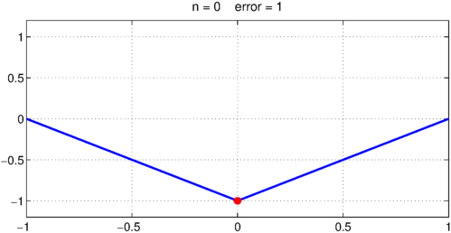
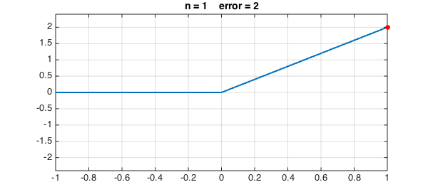
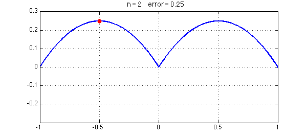
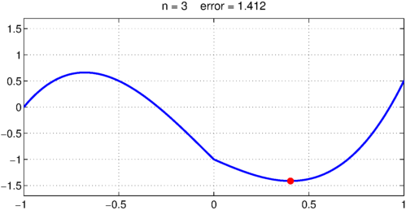
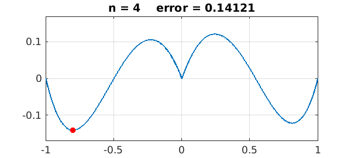
Let's continue to $n = 8, 16, 32, 64, 128$:
for n = 5:128
s = [s; maxpos];
p = interp1(s,f,dom);
err = f-p;
[maxval, maxpos] = norm(err,inf);
if log2(n)==round(log2(n))
hold off, plot(err,LW,2), ylim(1.2*maxval*[-1 1]), grid on
hold on, plot(maxpos,err(maxpos),'.r','markersize',24)
title(['n = ' int2str(n) ' error = ' num2str(maxval)],FS,14), snapnow
end
end
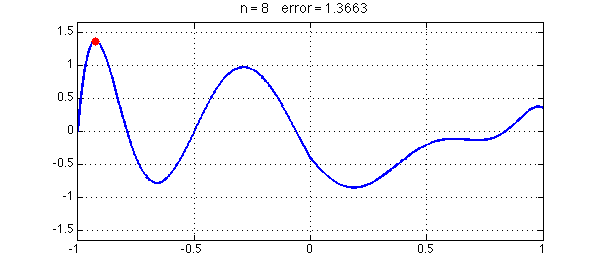
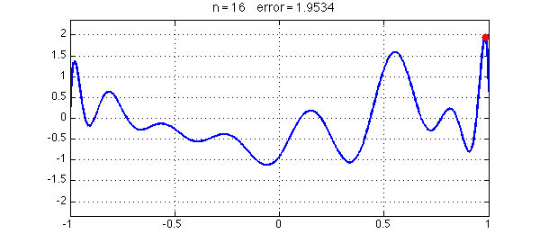
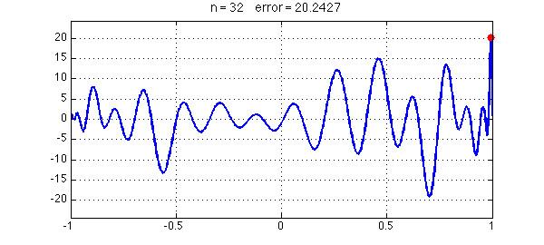
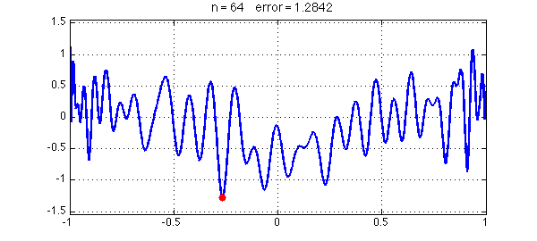
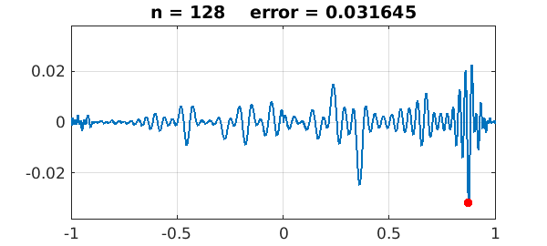
The greedy algorithm has chosen interpolation points that cluster near the boundary. Here they are in black, compared with Chebyshev points in red:
hold off, plot(sort(s),'.k',MS,12) scheb = chebpts(length(s)); hold on, plot(scheb,'or',MS,6) ylim(1.02*[-1 1])
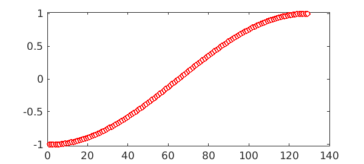
Here is a comparison of the Lebesgue function of the greedy points, again compared with Chebyshev points in red:
hold off, semilogy(lebesgue(s),'k',LW,1.4) hold on, semilogy(lebesgue(scheb),'r',LW,1.4)
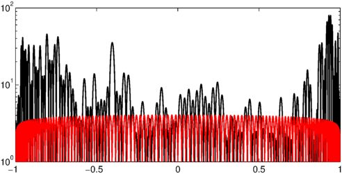
The flavor of this kind of algorithm is reminiscent of the theory of Leja points [1,2], though the details are different since Leja points are determined just by the domain of approximation whereas here we are adaptively working with the function $f$ itself. For an explanation related to potential theory of why effective interpolation grids tend to cluster near boundaries, see Chapter 12 of [3].
References
[1] L. Reichel, Newton interpolation at Leja points, BIT Numerical Mathematics 30 (1990), 332-346.
[2] R. Taylor and V. Totik, Lebesgue constants for Leja points, IMA Journal of Numerical Analysis, 30 (2010), 462--486.
[3] L. N. Trefethen, Approximation Theory and Approximation Practice, SIAM, 2013.